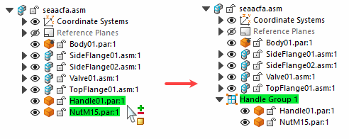

Group Command (PathFinder)
Collects part and subassembly entries together in PathFinder so you can locate, select, and manipulate them as a unit. This makes it easier to perform operations on a related set of assembly components, such as displaying and hiding the components. After you define a group entry, you can use the Rename command on the shortcut menu to rename the group entry to a more logical name.

You can only select parts and subassemblies in the active assembly. You cannot select nested parts or nested subassemblies.
Grouping components also reduces the space requirements in PathFinder, which is useful when working with large assemblies that contain few or no subassemblies. A group entry can be expanded and collapsed using the plus and minus symbols adjacent to the group entry in PathFinder, or using the Expand and Collapse commands on the shortcut menu.
The parts and subassemblies do not have to be contiguous entries in PathFinder. You can use the Ungroup command to unbind a previously defined group of components.
Some assembly commands create a group of components automatically. For example, the Move Components command creates a group entry in PathFinder when you set the Copy option on the command bar.
How do I
Group or ungroup entries in PathFinderLook up more details
Group command (PathFinder)Ungroup command (PathFinder)